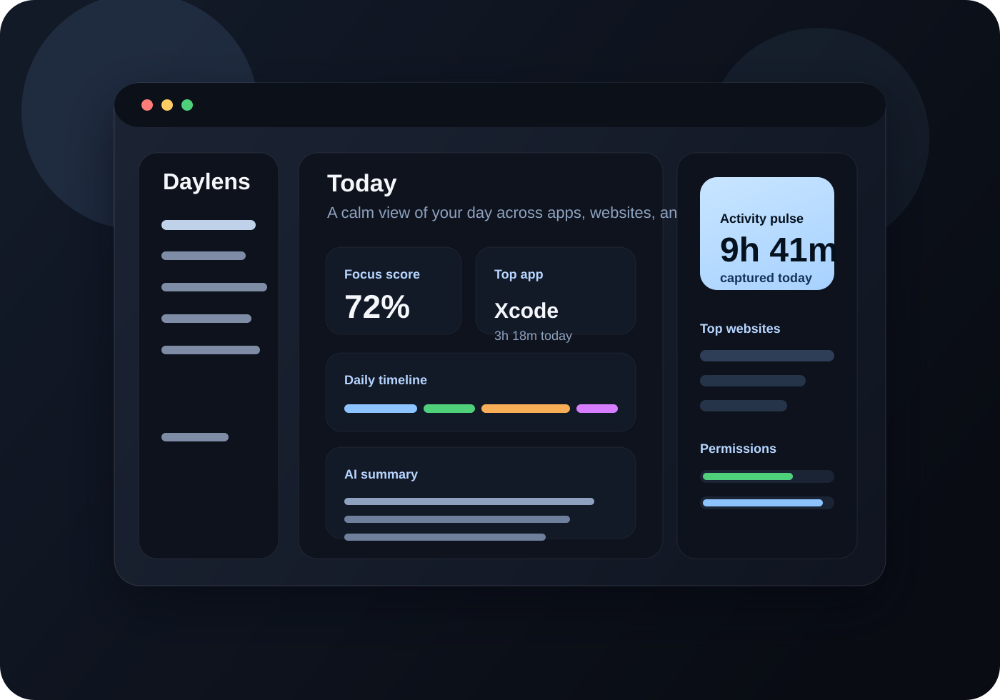

Local-first
Your tracking data stays on your Mac. No telemetry, no analytics, no cloud sync.
Track the apps, browsers, and websites that shaped your day, then turn that activity into calm, grounded insight. Daylens is local-first, privacy-forward, and fully open source.

Your tracking data stays on your Mac. No telemetry, no analytics, no cloud sync.
Generate summaries and ask grounded questions about your actual activity history.
Chrome, Arc, Safari, Brave, Edge, and Firefox all feed into the same daily story.
Built in SwiftUI with a calm, information-dense layout that feels at home on Sonoma.
Daylens separates active use from background noise, blends app and browser context together, and surfaces focus patterns you can act on.
Audit the code, run it locally, and contribute improvements. Daylens ships as an open project from day one.
Explore the repositoryThe experience moves from capture to interpretation: what happened, what mattered, and what might deserve your attention tomorrow.
Focus score, live app activity, timeline context, and top apps in one calm surface.
Review meaningful sessions, browser imports, and category overrides across the day.
Ask questions about your usage history and generate grounded summaries when you want them.
Tracking data stays on your Mac, your API key lives in macOS Keychain, and you can delete all collected data at any time from Settings.
Read the privacy policy